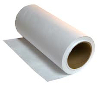
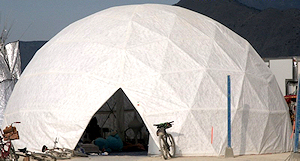
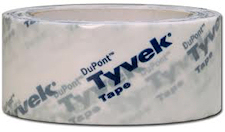
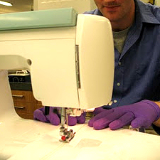
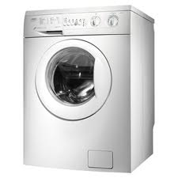
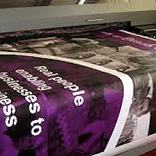

Tyvek
Geodesic domes can be covered with Tyvek® from Dupont, also commonly known as house wrap or Spunbonded Olefin (high-density polyethylene).
Among many features: it is very difficult to rip, it can be sewn and it’s weatherproof. You come across Tyvek® every day, from FedEx and CD envelopes to protective clothing. It’s lightweight, flexible, smooth, resistant to water, rot and mildew, chemicals, abrasion, and aging. It has a high strength-to-weight ratio and is pH neutral.
Tyvek® is offered in 2 basic types:
| Paper-like texture (hard Structure Tyvek® – Type 10) | Type 10, a “hard” area-bonded product, is a smooth, stiff non-directional paper-like substrate with good printability in both sheet and roll form. |
| Fabric-like texture (Sewing Soft Structure Tyvek® – Type 14, 16, Reflektra™, HL™, and RV™) | Types 14 and 16 are “soft,” products with an embossed pattern giving it a fabric-like flexibility with good printability and tear resistance. Like Type 10, they have a high opacity and whiteness. Sewing, gluing, ultrasonic seaming and heat sealing are used in fabrication with these styles.
Type 14 styles are used when barrier, durability and breathability are required. They posess excellent splash and dry protection and provide an excellent bacterial barrier. Its low-linting combined with its barrier properties, make Type 14 an excellent material for cleanroom environments such as pharmaceutical manufacture and electronic assembly. Type 16 styles are pin perforated with 5-20 mil (0.13-0.51 mm) holes, giving them much higher air and moisture permeability, additional softness, and greater flexibility and drape than Type 14 styles, but at the expense of lower tear strength and barrier properties. Type 16 styles are used for general purpose garments, bags and packaging. |
There are several other types of Tyvek®
Tyvek® StuccoWrap, Tyvek® CommercialWrap, Tyvek® DrainWrap, Tyvek® ThermaWrap, Tyvek® AtticWrap, DuPont FlexWrap, DuPont StraightFlash, DuPont StraightFlash VF, Tyvek® Wrap Caps. Most home improvement stores sell Tyvek® home wrap in 10 foot wide rolls, generally 50 to 100 yards long.
Tyvek® characteristics and features
- Though fairly opaque, it still lets in some amount of sunlight through it.
- Can be washed by hand or gentle cycle in the washing machine
- Tyvek® has a higher strength-to-weight ratio than paper. So, lighter weights of Tyvek® can be used for most applications.
- Incredibly Water and Moisture Resistant. Tyvek® absorbs little or no moisture…and liquids simply run off its smooth surface. And, the physical properties of Tyvek® are the same, wet or dry!
- Strong and rip-resistant, Tyvek® stands up to tough applications. And Tyvek® is more elastic than paper, making deep embossing possible without fracturing.
- 100% Recyclable
- Printable surface
- Bright white and silky smooth, Tyvek® has a distinctive look and feel that enhances graphic images and instantly sets it apart from all other materials.
- Protective covers manufactured with 100% DuPont™ Tyvek® provide superior protection from harmful environmental conditions, are lightweight and exceptionally breathable, and strong, durable and long lasting.
- UV protection. For example, Tyvek® CommercialWrap® has the ability to withstand UV exposure for up to 270 days.
- Hand wash with mild soap. No bleach – or machine wash, gentle cycle
Tyvek® Tape
Available at any home improvement store, Tyvek® tape adheres to Tyvek® very well and is almost impossible to remove without destroying the material. It is also highly water resistant. Sewn seams covered with Tyvek® tape are significantly reinforced and eliminate water coming in the seam.
Other adhesive transfer tapes can be used. 3M’s 300LSE waterproofs joints while still letting the taped area pliable. You can also use outdoor carpet tape.
Tyvek® cons for geodesic domes
Though Tyvek® has many pros going for it there are downsides to it when used as a geodesic dome cover:
- Noise factor: when the wind hits the Tyvek® covered dome there may be flapping and so a lot of noise at high winds. Soft Tyvek® will lessen this problem but unless your geodesic dome is well fastened and streched, prepare to be annoyed when the wind picks up. Hard structure Tyvek® (the one you normally find at the hardware store) is stiff and noisy when new, but if you put the Tyvek® in a washing machine on the delicate cycle with no detergent for 2-3 cycles, it comes out soft and much more fabric-like. Washing this type of Tyvek® does not seem to affect the water resistance but can cause some shrinkage. 5% should be added to measurements to allow for shrinkage if you are going to wash your Tyvek® .
- Skills to sew pieces together. But then again, it’s less expensive than buying a pre-made cover
- Type 10 (regular paper-like) and type 14 (regular fabric-like) are not perforated to let it breathe; you will need to ensure there are openings such as windows and ventilation holes to avoid overheating and condensation (just like a car with all windows up!)
- UV protection is up to 270 days. Now keep in mind Florida has more intense sunlight year-round than New York which is not as sunny during the year. Since many domes are not used year-round you can stretch the UV protection for a much longer period. If you plan to use Tyvek® for a greenhouse, you may want to consider Aluminet as an alternative.
Sewing Tyvek® for geodesic domes
Tyvek® can be sewn to form a larger piece which is what you need to create a geodesic dome cover. The amount of stitching per inch varies on which type of Tyvek® you are working with.
Sewing Tyvek® can be done on a regular home sewing machine. The only other requirement is having the space to sew large sections together. If you want your fabric to be softer, run each section through the washing machine 2-3 times. Not only will it be easier to handle but it will shrink approximately 4%-5%. This way your dome cover will have a better fit.
Sewing Hard Structure Tyvek® – Type 10
• Use 3-5 stitches/inch (1.2-2 stitches/cm) at low tension to eliminate skipping.
• Use #306 (Union Special) or #14 (Singer) needle, or equivalent.
• Use a flat tipped needle that cuts slit-like perforations. “Rock Point” (Union Special) or “Narrow Wedge” (Singer) will permit top speed operation with the same thread used for round-point needles.
• The informal industry standard of 25/4 tex (24/4cc) glace thread of short staple cotton in #14 and #036 needles have given satisfactory performance in outdoor banners when coupled with 16.5/3 tex (36/6cc) soft looper thread. If smaller diameter thread is required, 14.5/4 tex (40/4cc) glace thread of “Sak” quality should provide satisfactory results.
Sewing Soft Structure Tyvek® – Type 14, 16, Reflektra™, HL™, RV™
• Up to 12 stitches/in. (4.7 stitches/cm) can be used: however, 6-8 stitches/in. (2.4-3.1 stitches/cm) provide the highest seam strength (greatest resistance to postage stamp tear).
• Use a fine-tooth feed dog – 12 to 21 teeth/in. (4.7-8.3 teeth/cm)
• Decrease presser-foot tension until the sheet just feeds through the machine without slipping. About 10 lb. (4.5 kg) force should be sufficient.
• Decrease bobbin tension until the bobbin just slips down the thread: 3 oz. (85g)
• Wind bobbin with thread tension set so that the thread just slips through the disc: 2 oz. (57g)
• After setting bobbin tension, adjust needle tension to produce a balanced stitch.
• Conventional threads of cotton/synthetic or 100% polyester may be used.
• Spun-filament polyester is stronger than cotton thread and is preferred for flame-resistant considerations.
A great way to make Soft Structure Tyvek® even softer
Hand wash with mild soap. No bleach – or machine wash, gentle cycle, cold water. Drip dry only. Do not put in a dryer, dry clean, or use an iron on this fabric. For increased softness repeat once or twice. If you have tape on your Tyvek® , it will resist quite well to water exposure.
Expect 4%-5% shrinkage if you are going to wash your Tyvek® .
Printing with Tyvek®
Tyvek® printing can be used by all conventional printing processes: letterpress, offset lithography, heat-set web offset, flexography, gravure, and screenprinting.
Tyvek® is also thermal transfer printable. Hot process laser printing and photocopying are not suitable with Tyvek® .
For wide format ink jet printing, a Tyvek® with an ink jet receptive coating is required.
Tyvek® with antistatic and corona treatment is strongly recommended for improved adhesion of inks, coatings and adhesives.
Depending on the style of Tyvek® , dot gain will increase 15 to 20% compared to coated paper.
As a rule you will need 15% more ink to achieve color densities similar to uncoated paper.
Tyvek® absorbs little or no moisture so it requires longer drying times than paper.
Never expose Tyvek® to temperatures above 175°F. The higher the temperature the more Tyvek® will distort.
To avoid static, maintain a relative humidity of 50% or greater.
Fabricating and manipulating Tyvek®
Tyvek® will stretch up to 30% before breaking. To minimize distortion or neck down during roll fed converting, keep tension less than 1.4 N/cm (0.75 pounds/inch.) A floppy web is recommended. This is particularly true when die cutting Tyvek® business forms with rotary punched sprocket holes.
| Slitting, Sheeting, Cutting | Because Tyvek® fibres are very strong, each must be completely severed; hangers will not break off. Knives, dies and punches must be set to close tolerances. A sharp, slightly rounded edge gives longer service than a pointed edge for crush cutting, but a sharp edge is preferred for other slitting methods. |
| Rotary Die Punching | Because soft steel male/female rotary dies dull quickly when Set to the close tolerances required to punch Tyvek® cleanly, the use of rotary dies made of hardened tool steel or tungsten carbide is recommended. A list of manufacturers of these dies for Tyvek® is available from your Tyvek® Technical Specialist. |
| Die Cutting | Tyvek® can be die-cut using either steel rule, male/female or closed dies. Tyvek® fibres must be completely cut and dies must be in good condition with sharp, nick-free edges. Dull dies cause edges to curl. When using closed dies, the use of a side cutter with internal relief is recommended. Deaerate and keep lift height below 7.6 cm (3 inches) when die cutting to avoid oversizing to blanks. |
| Punching | Tyvek® can be punched on tag, letterpress and rotary line-hole equipment. Best results are obtained for sharp, well registered and closely fit punches. Punches may be either smooth or serrated and cut best if ground concave on the ends. A soft self-honing male punch in a hardened female die is recommended. |
| Folding | Tyvek® will take a dead fold and can be folded on conventional bindery folders. An increase in roller and spring tension will produce sharper creases. Due to the inherent slippery surface of Tyvek® , soft, rubber-covered rollers will aid feeding. |
| Perforating | For clean-tearing perforations, use the maximum practical number of cuts with the smallest land (reserve) between them. An 8:1 ratio (1/4” [6.4mm] cut with 1/32” [0.8mm] reserve) is recommended. |
| Embossing | Tyvek® can be embossed with either high or low pressure equipment. Cold embossing does not significantly reduce the strength of Tyvek® . It does, however, reduce opacity. Embossing cylinders used for Tyvek® usually are very shallow, having a depth of only 0.13-0.65 mm (5-25 mils.). A Shore “D” hardness of 70-80 for the rubber back-up cylinder is preferred. |
| Foil stamping | This is readily accomplished on Tyvek® due to its thermoplastic nature. A variety of foils is available from suppliers for label and book cover applications. A foil that will transfer cleanly to Tyvek® between 135-160°C (275-325°F) should be chosen. Large, solid foil-stamped areas tend to pucker and distort Tyvek® and should be avoided. |
| Coating | When coating or laminating Tyvek® , the web temperature should not exceed 79°C (175°F). Coatings are used to color, improve print fidelity, add gloss or mask the fibre pattern of Tyvek® . Air-knife coating is preferred for aqueous coating because it applies a uniform thickness of coating on Tyvek® . Usually an increase in binder content is needed to achieve acceptable coating adhesion to Tyvek® . The air knife also produces a very smooth surface which is ideal for printing. Gravure coating is preferred for solvent-based systems, particularly where deep coloration is required. |
| Dyeing | Conventional textile dyeing processes do not impart permanent color to Tyvek® . For this reason, Type 14/16 Tyvek® is usually printed by the flexographic or gravure process using either solvent or water base inks. Sublistatic printing of Tyvek® is not recommended because of the high temperatures used. |
| Laminating | Tyvek® can be extrusion, adhesive and calender laminated. Extruded, branched polyethylene is an excellent adhesive for laminating foil and film to Tyvek® . Polyurethane adhesives can be used to adhere a variety of films and fabrics to Tyvek® . When laminating Tyvek® to paper or board, it is important to completely cover Tyvek® with adhesive to prevent bubble formation. |
| Heat Sealing/Dielectric Sealing/Ultrasonic Sealing | Heat sealing Tyvek® to itself or other films is usually accomplished by applying a heat seal coating such a branched polyethylene to one of the materials. High seal strength can be achieved using hot-bar or impulse techniques. Tyvek® cannot be dielectrically sealed under ordinary conditions because it is non-polar. Recent developments in ultrasonic sealing have demonstrated seals almost equivalent to heat seals. |
| Gluing | Natural product adhesives based on dextrin, casein or animal byproducts can be used to adhere Tyvek® to itself and a variety of paper materials. Water based synthetic lattices such as the ethylene/vinyl acetate adhesives form fibre tearing bonds with Tyvek® . Hot melt polyamide adhesives are available which form good bonds to Tyvek® with a variety of materials. Acrylic pressure sensitive adhesives are commonly used with a release liner. |
| Sewing | Tyvek® can be sewn on conventional sewing machines. Best results are obtained with machines equipped with puller or drop-feed. Smooth, rubber covered rolls should be used rather than knurled metal rolls which tend to leave impressions on Tyvek® . |
| Stitching | When stitching the Type 10 styles of Tyvek® , 2-3 stitches/cm (4-5/in.) and the smallest needle practical should be used to avoid postage stamp tears. On soft type 14/16 Tyvek® , it is recommended to sew rough side to rough side. |
Flammability
Clean untreated Tyvek® shrinks away from the heat of an open flame without igniting. Fabrics of Tyvek® should not be used near heat, flame, sparks, nor in explosive environments. It will begin to shrink at 244ºF (118ºC) or melt until 275ºF (135ºC). Its auto-ignition temperature is 650ºF (343ºC).
The flammability characteristics of Spunbonded Olefin, a synthetic nonwoven material, are similar to those of most synthetic fibers. When exposed to a flame, Spunbonded Olefin shrinks away rapidly. If the flame is made to follow the shrinking sheet, Spunbonded Olefin will melt at 275°F (135°C), and if its auto-ignition temperature of 750°F (400°C) is reached, it will burn.
Type 10 Spunbonded Olefin is rated class “A” when tested in accordance with ASTM E-84-89a. Types 14 and 16 are rated “Class 1—Normal Flammability” by the Federal Flammable Fabrics Act for Clothing Textiles (16 CFR-1610). Spunbonded Olefin does not pass DOC FF3-71, Children’s Sleepwear Test.* Spunbonded Olefin and laminates of Spunbonded Olefin are not intended for use in fire-retardant garments. The user should ensure that Spunbonded Olefin meets all flammability standards for the application.
Some vendors carry Tyvek® with a flame retardant coating. Some of the materials available are styles 1056D, 1073D, 1079, 1085D